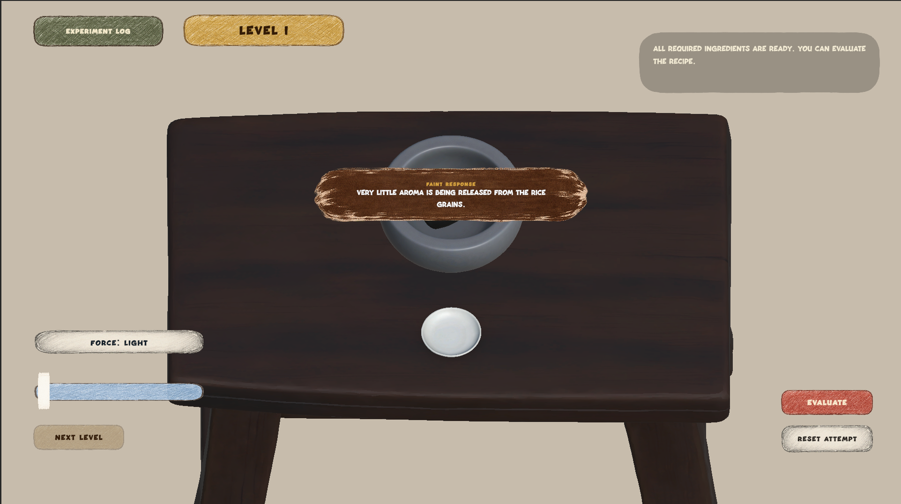
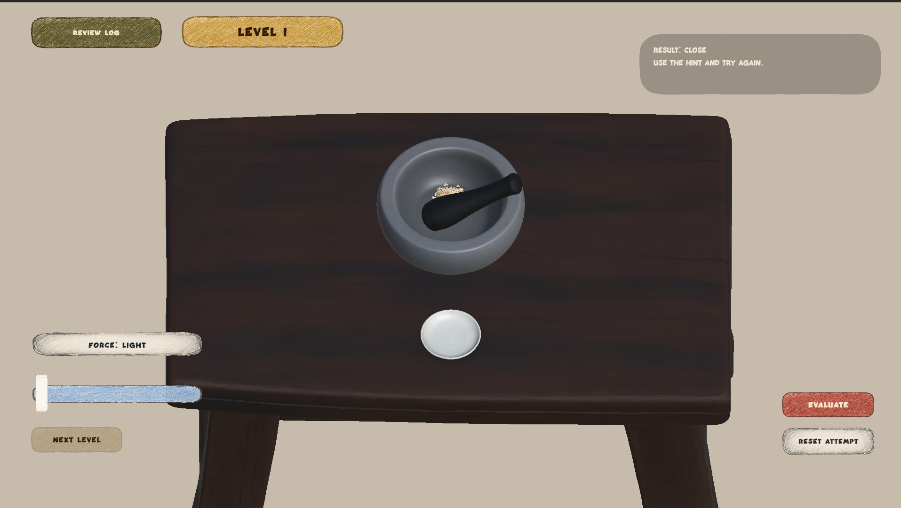
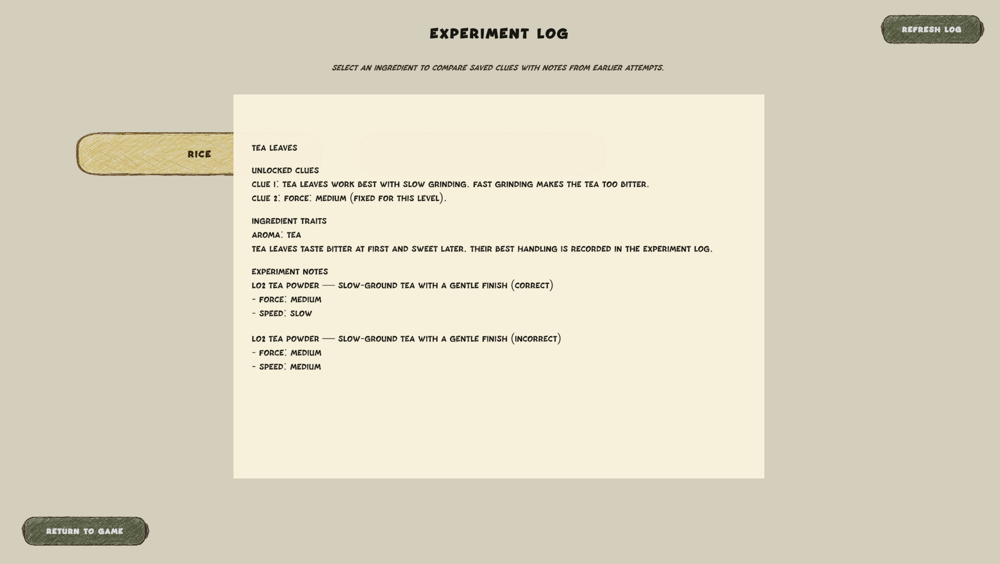
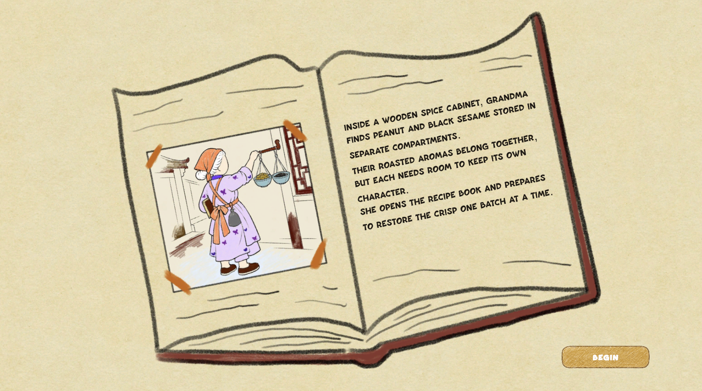

Visit到访
Arrive in a different Guangdong city and encounter a local flavor connected to the grandmother's past.来到广东的一座城市，遇见一种与奶奶过去经历相连的地方味道。
Reconstruct Cantonese recipes through trial and error. 通过尝试，还原广式配方。
A 3D Recipe Puzzle Game一款 3D 配方解谜游戏
Players experience the journey from the grandmother's point of view, travelling through cities across Guangdong to search for the Cantonese recipes she remembers from childhood. The ingredients are still known, but the correct methods have been lost. 玩家将以奶奶的视角展开旅程，跟随她走访广东的不同城市，寻找童年记忆中的广式配方。食材仍有记录，但正确的制作方法已经失传。
The Taste Reviver
The ingredients are known. Players work out how to prepare them.食材已知，制作方法需要玩家找出来。
The Taste Reviver is told from the grandmother's point of view. She travels from one Guangdong city to another, following fragments of memory connected to local food. In each place, she encounters a recipe she once knew: the ingredient names may have survived, but the exact order, proportions, grinding methods, and preparation rhythm have disappeared. 《味觉复原师》以奶奶的视角展开。她从广东的一座城市前往另一座城市，沿着与地方食物相连的记忆寻找线索。每到一个地方，她都会遇见一道曾经熟悉的配方：食材名称也许仍被记录，但准确的加入顺序、比例、研磨方法与制作节奏已经消失。
The player works with ingredients supplied by each level, tests their preparation, and uses feedback and unlocked clues to reconstruct the missing method. The larger story connects these recipe puzzles to the grandmother and her remembered flavors.每关提供指定食材，玩家通过尝试处理方式、读取反馈与解锁线索，逐步还原缺失的方法。整体故事则将这些配方谜题与奶奶及她记忆中的味道联系起来。
The Taste Reviver
Each city has a local recipe to solve.每到一座城市，玩家都会遇到一道当地配方。
The grandmother travels across Guangdong looking for food she remembers. Each recipe puzzle is part of that trip.奶奶走访广东，寻找记忆中的食物。玩家在旅途中逐关还原配方。
Arrive in a different Guangdong city and encounter a local flavor connected to the grandmother's past.来到广东的一座城市，遇见一种与奶奶过去经历相连的地方味道。
Use the supplied ingredients and test proportion, order, batch grouping, force, and speed.使用关卡指定的食材，探索比例、顺序、研磨分批、力度和速度。
Use feedback and earlier records to recover the method, restore the memory, and carry new knowledge into the next city.利用反馈与先前记录复原制作方法，找回记忆，并把新的知识带往下一座城市。
The Taste Reviver
I missed the food my family made.我想念家里人做的饭。
While studying in the United States, I missed food from home, especially meals made by my family. I wanted to make a game about finding those familiar recipes and working out how to make them.在美国留学时，我很想念家乡的食物，尤其是家里人做的饭。我想把寻找熟悉的配方、试着还原做法这件事做成游戏。
The Taste Reviver
Choose amounts, arrange batches, and grind with the mouse.选择用量、安排批次，再用鼠标研磨。
The game takes place at a wooden worktable containing a mortar, a pestle, and the ingredients required for the current recipe. Players drag ingredients into the mortar, choose their amounts, decide the order and batch structure, and control the pestle directly with the mouse. 游戏画面集中在一张木制工作台上。桌面摆放着研钵、石杵，以及当前配方所需的食材。玩家需要拖放食材、选择用量、决定加入顺序与研磨批次，并通过鼠标亲手控制石杵。
A pressure slider provides Light, Medium, and Heavy settings, while mouse movement is interpreted as Slow, Medium, or Fast grinding. Proportion, order, and batch grouping are the other evaluated dimensions; each level states which dimensions it checks.力度滑条提供轻、中、重三档，鼠标移动被识别为慢、中、快三档研磨速度。比例、顺序和研磨分批是另外三个判定维度，每关会说明当前考察哪些维度。
Because the correct recipe is not shown directly, the player must treat every attempt as evidence. A mixture may use the right ingredients but fail because the proportions are wrong, because one ingredient was added too early, or because ingredients that should be processed separately were ground together. 由于正确配方不会被直接公开，玩家需要把每次尝试都当作线索。一次实验可能使用了正确食材，却因为比例不对、某种食材加入过早，或本应分开处理的食材被一起研磨而失败。
Read ingredient traits and decide how each ingredient should be handled.阅读食材特性，判断每种食材需要怎样处理。
Control proportion, order, batches, force, and speed.控制比例、顺序、批次、力度和速度。
Read the result, unlock clues after a Correct recipe, and use that knowledge in later experiments.读取结果，在配方完全正确后解锁线索，并将知识用于后续实验。
System & Learning Design系统与学习设计
Opening every variable at once would leave too many combinations to try.如果同时开放所有维度，玩家需要尝试的组合会太多。
The worktable brings these decisions into one space. Ingredients are supplied by the level. Players choose amounts, arrange processing, and control the pestle with the mouse. Each action changes a specific part of the experiment.工作台把这些决策集中在同一个空间。食材由关卡指定，玩家选择用量、安排处理过程，再用鼠标操作研磨杵。
| Dimension维度 | What it determines决定什么 | Player action玩家如何操作 |
|---|---|---|
| Proportion比例 | How much of each ingredient is used.每种食材的用量。 | Choose an amount for each ingredient.选择每种食材的用量档位。 |
| Order加入顺序 | Which ingredient enters the mortar first.哪种食材先进入研钵。 | Drag ingredients into the mortar in sequence.按顺序将食材拖入研钵。 |
| Batch Grouping · 研磨批次 | Which ingredients are processed together or separately.哪些食材共同处理，哪些分开处理。 | Press New Batch to begin a separate processing group.按 New Batch 开始新的处理批次。 |
| Force力度 | How strongly a batch is ground.每一批研磨时施加的力度。 | Set the pressure slider to Light, Medium, or Heavy.通过力度滑条选择轻、中、重。 |
| Speed速度 | How quickly the pestle moves.石杵移动的快慢。 | Move the mouse at a Slow, Medium, or Fast pace.通过鼠标移动控制慢、中、快三档节奏。 |
Order determines what comes first. Batch grouping determines what is ground together. In L12, Douchi and Ginger share a batch, while Scallion Stem and Coarse Salt are processed separately. New Batch marks the boundaries between these groups.顺序决定先放什么，分批决定哪些一起研磨。在 L12 中，豆豉和姜共同处理，葱茎与粗盐则分别处理。New Batch 操作明确了各组之间的边界。
Batch 01
Processed together共同处理
Batch 02
Processed separately单独处理
Batch 03
A separate final batch独立的最后一批
To understand the cost of unrestricted experimentation, I estimated the configurations for four distinct ingredients, each used exactly once. This model preserves the order of addition and allows each batch its own force and speed settings. Proportion is held fixed.为了判断完全开放的试错成本，我估算了四种不同食材各使用一次时的操作配置数。这里保留食材的加入顺序，每批独立选择力度与速度，暂时固定比例。
| Dimension维度 | Choices可选方式 | Count数量 |
|---|---|---|
| Force力度 | Light / Medium / Heavy | 3 per batch每批 3 种 |
| Speed速度 | Slow / Medium / Fast | 3 per batch; 9 force–speed pairs每批 3 种；力度与速度共 9 种搭配 |
| Order食材顺序 | Arrange all four ingredients.四种食材全部排列。 | 4! = 24 |
| Batch grouping研磨分批 | For a fixed order, split or join at each of three gaps. This includes one batch of four, two pairs, a group of three plus one, and four separate batches.固定顺序后，三个间隔各自选择分开或合并；包含四种一起、两两一批、三种一批加一种单独处理，以及全部单独处理等方式。 | 2³ = 8 per order每个顺序 2³ = 8 种 |
| Batches批次数 | Calculation计算方式 | Configurations操作配置数 |
|---|---|---|
| 1 | 24 × 1 × 9 | 216 |
| 2 | 24 × 3 × 9² | 5,832 |
| 3 | 24 × 3 × 9³ | 52,488 |
| 4 | 24 × 1 × 9⁴ | 157,464 |
| Total总计 | 216 + 5,832 + 52,488 + 157,464 | 216,000 |
The factors 1 / 3 / 3 / 1 count ways to place batch boundaries for each fixed ingredient order. Order and grouping are counted together to avoid duplication. These are distinct action configurations under the stated assumptions, not necessarily distinct evaluated outcomes. Proportion choices would expand the space further.1 / 3 / 3 / 1 表示每个固定顺序下各批次数的边界设置方式。顺序与分批联合计算，避免重复计数。这是上述假设下不同操作配置的数量，不一定对应同样多种判定结果；如果再开放比例，范围还会进一步扩大。
I limited the variables each level checks because there were too many combinations to try blindly. Players can use clues saved from earlier levels to narrow down the choices in later recipes.组合太多，所以我限制了每关考察的维度。后面的配方也会用到前面保存的线索，帮助玩家缩小尝试范围。
If players change every variable at once, it is hard to tell which change affected the result. Early levels therefore focus on fewer variables.如果一次改动所有条件，就很难知道是哪项修改影响了结果。因此，前期关卡只考少量维度。
Early levels introduce individual rules. Later recipes reuse the same ingredients.前期关卡教单项规则，后面的配方再用到相同食材。
A dedicated Experiment Log Practice level teaches players to open the log and recover previous knowledge.专门的 Experiment Log Practice 教玩家打开日志，找回先前获得的知识。
L12 introduces no new rule. It asks players to combine knowledge from L07, L10, and L11.L12 不引入新规则，而是要求玩家组合 L07、L10 和 L11 的知识。
I arranged the levels so players learn a rule before needing it in a harder recipe.我先安排学习规则的关卡，再让玩家在更复杂的配方里用到它。
The Taste Reviver
Tell players what needs adjusting.告诉玩家需要改哪里。
Each level identifies the dimensions it checks. The Hint Panel gives an overall Correct, Close, or Wrong result, followed by guidance about the dimensions that still need adjustment.每关会明确说明考察哪些维度。Hint Panel 给出 Correct、Close 或 Wrong 的整体评价，再针对仍需调整的维度提供提示。
Force and speed each have three settings. For either dimension, an adjacent setting is Close; a setting two steps away is Wrong. If force is correct but speed is close, the guidance points to speed so players can preserve the part they have already solved.力度与速度各有三档。对这两个维度而言，相邻档位判为 Close，相隔两档判为 Wrong。如果力度正确、速度接近，提示会指向速度，让玩家保留已经做对的部分。
Players open Ingredient Traits to read about the supplied ingredients. Level 1 checks force alone: its rice description provides the Medium-force clue. Players can explore the interface buttons before combining more decisions in later levels.玩家主动打开 Ingredient Traits 查看指定食材的介绍。第一关只考力度，大米介绍提供中等力度的线索。玩家先探索界面按钮，再在后续关卡中组合更多决策。


The Taste Reviver
Save clues by ingredient for later levels.按食材保存线索，后面的关卡可以回查。
Clues unlock only when the entire recipe is Correct. A Close result does not unlock a clue for an individually correct dimension. Unlocked clues are organized by ingredient so players can revisit what they have learned when that ingredient appears again.只有整道配方完全 Correct，才会解锁线索。整体 Close 时，不会单独解锁已经做对的维度。已解锁线索按食材分类，方便玩家在后续再次遇到同一食材时回查。
A dedicated practice level asks players to consult the Experiment Log without receiving a new hint. This teaches retrieval before later recipes ask them to combine earlier discoveries. Repeated ingredients connect the levels, and Level 12 brings that accumulated knowledge together.专门的练习关不提供新的提示，而是要求玩家回查 Experiment Log，让玩家先学会调用记录，再在后续配方中组合已有发现。重复出现的食材将关卡联系起来，第十二关则综合运用这些积累。

Level Design
Level 1 isolates force before the system asks players to combine rules.第一关只考力度，先理解一个变量，再逐步组合规则。
The opening level has no story scene or multi-step puzzle. Its purpose is to introduce the worktable and the basic handling process. Rice is supplied, and Ingredient Traits provides the clue to use Medium force. Players drag the rice into the mortar, adjust the force slider, and grind with a circular mouse movement.第一关没有故事画面，也不承担多步解谜。它主要介绍工作台与基本处理过程：关卡提供大米，Ingredient Traits 给出中等力度的线索；玩家拖入大米、调整力度滑条，再通过鼠标画圈完成研磨。
The interface leaves room for players to discover buttons through exploration. I initially trusted players to click and inspect Hint and Ingredient Traits. Separately, each level names the dimensions it evaluates, giving players a defined scope for their recipe experiments.界面留出了自行探索按钮的空间。最初，我相信玩家会通过点击发现 Hint 和 Ingredient Traits。同时，每关会明确标出判定维度，为配方尝试限定范围。
Knowledge Reuse
Dried tangerine peel appears in five levels: L03, L05, L07, L08, and L10.陈皮在 L03、L05、L07、L08、L10 中共出现五次。
I reused ingredients so players could apply what they had learned. When peel appears again, they can check its earlier notes in the Experiment Log.我重复使用一些食材，让玩家有机会用上之前学到的东西。再次遇到陈皮时，就可以回查日志里的旧记录。
Its appearances cover different decisions: order in L03, batch grouping in L05, proportion and force in L07, separate processing in L08, and a combination of order, proportion, force, and speed in L10. Repetition changes the context in which players use an ingredient.这些出场涉及不同决策：L03 的顺序、L05 的分批、L07 的比例与力度、L08 的分别处理，以及 L10 中顺序、比例、力度与速度的组合。重复出现的食材，被放进了不同的使用情境。
The current level data also exposes a limit to reuse: L08 uses Medium force and Fast speed for separately processed peel, while L10 uses Heavy force and Slow speed for the whole recipe. Future clue revisions should distinguish these contexts. L07 should introduce its proportion knowledge clearly before L10 asks players to recall it.当前关卡数据也暴露出复用的边界：L08 中单独处理陈皮使用 Medium 力度与 Fast 速度，而 L10 整道配方使用 Heavy 力度与 Slow 速度。后续修改需要让线索明确区分这些情境，并让 L07 清楚地承担首次学习陈皮比例的任务，再由 L10 要求回忆应用。
The Taste Reviver
L12 asks players to use notes from L07, L10, and L11.L12 需要用到 L07、L10 和 L11 的记录。
L12 adds no new rules. Players use notes from L07, L10, and L11 to work out amounts, order, batches, force, and speed for one recipe.L12 不增加新规则。玩家需要查阅 L07、L10 和 L11 的记录，确定这道配方的用量、顺序、分批、力度与速度。
Before the formal levels rely on this behavior, an Experiment Log Practice level teaches it directly with Tea Leaf using Medium Force and Slow Speed.在正式关卡要求玩家依赖这一功能之前，Experiment Log Practice 会使用 Tea Leaf（Medium Force + Slow Speed）专门教学玩家如何从日志中找回旧知识。
The Taste Reviver
I missed dishes such as braised beef while studying abroad. Some preparations were difficult to recreate in the United States. Grinding was a simpler process to start with, so I used it as the main interaction for a recipe puzzle game.留学时，我很想念卤牛肉等家乡食物，但有些复杂做法在美国不容易复现。研磨相对简单，所以我选它作为配方解谜的主要操作。
Design Iteration设计迭代
The clues went through many revisions.线索经历了多轮反复修改。
02
My early concept used the opening, middle, and lingering notes of an aroma to suggest grinding force or speed. I wanted players to interpret flavor rather than immediately read off an answer. In play, these descriptions could be difficult to understand, and their nuances did not always carry consistently between Chinese and English.最初，我希望用香味的前调、中调、后调暗示研磨力度或速度，让玩家通过风味联想进行推理。实际游玩时，这些描述不易理解，中英文之间也难以始终传达相同的细微含义。
03
My early peel clue described its slight bitterness, its supporting role in reducing unwanted odors, and its ability to soften pungent ingredients. I expected players to translate those culinary descriptions into actions: a finishing accent should come late in the sequence, while a supporting ingredient might be ground with pepper or another pungent ingredient.早期的陈皮线索描述了它的微苦、去腥点缀的作用，以及温和处理辛辣食材的用途。我原本希望玩家把这些烹饪描述转化为操作：既然是点缀，就应该靠后加入；既然为辛辣食材打辅助，就可能需要和胡椒等食材一起研磨。
I later realized that players unfamiliar with peel might not make those connections. I knew the answer already, so the clue seemed clearer to me than it might to them.后来我想到，不熟悉陈皮的人未必能从这些描述想到顺序或分批。我自己已经知道答案，所以容易觉得线索足够清楚。
| Decision操作决策 | Early approach早期表达 | Revised approach修改方向 |
|---|---|---|
| Order顺序 | Describe peel as a finishing accent and expect players to infer a late addition.描述陈皮的点缀作用，让玩家自行推断靠后加入。 | State explicitly that peel is added last as a finishing touch in the relevant recipe.在对应配方中明确说明，陈皮最后加入，作为收尾。 |
| Batch grouping分批 | Describe its role in softening pungency and expect players to infer a grinding partner.描述它温和处理辛辣食材的作用，让玩家推断共同研磨的搭配。 | Name the ingredient that should be ground with peel in the relevant recipe.直接点明对应配方中，陈皮应该与哪种食材共同研磨。 |
I rewrote the clues to name the order or grinding partner more directly. I still need to test whether players unfamiliar with peel understand them.所以我把加入顺序和共同研磨的搭配写得更直接。之后还需要找不熟悉陈皮的玩家测试，看他们能不能理解。
These recollections describe an early wording strategy, not a universal rule for peel. In the current design, L03 places peel between red bean and rock sugar; L10 places it between ginger and coarse salt. L05 accepts any two of its three ingredients as a shared batch, with the remaining ingredient separate.上述回忆说明的是早期措辞策略，并非陈皮的通用规则。现版 L03 中陈皮位于红豆与冰糖之间，L10 中位于姜与粗盐之间；L05 接受三种食材中任意两种同批、另一种单独处理。
04
The early log mixed correct and incorrect attempts without labeling the results clearly. I added result labels and moved correct records to the top. Incorrect attempts remain available for comparison.早期日志把正确和错误的尝试混在一起，结果也没标清楚。后来我加上结果标记，把正确记录排在前面，同时保留错误记录供比较。
05
The September 23–24 knowledge-chain review clarified how information should be distributed. Opening descriptions establish flavor roles and a direction to explore. Previously learned rules remain available in the Experiment Log, while progressive hints help players apply them to the current problem. Later levels combine familiar rules with one new idea; L12 brings existing knowledge together without introducing a new rule or mechanic.9 月 23–24 日的知识链梳理，明确了不同信息的分工：开场交代风味角色与探索方向，学过的规则留在 Experiment Log 中供玩家回忆，渐进 Hint 帮助玩家把这些知识用于当前问题。后续关卡组合熟悉规则并加入一个新想法；L12 则不再新增知识或机制，集中考察已有知识的整合。
| Channel信息渠道 | What it reveals提供什么 | Player reasoning留给玩家的判断 |
|---|---|---|
| Opening / Traits开场／食材特性 | Flavor roles and recipe-specific direction. L06 establishes sesame as the leading flavor without excessive bitterness, and glutinous rice as the softening ingredient.风味角色与当前配方的方向。例如 L06 交代黑芝麻主导但不能过苦，糯米使口感柔滑。 | Translate the roles and relevant prior lessons into amounts and grinding choices.结合角色和旧知识，推导用量与研磨选择。 |
| Experiment Log实验日志 | Stable rules unlocked by fully correct recipes, organized for later retrieval.保存整道配方正确后解锁的稳定规则，供后续查阅。 | Find the relevant record and decide how it applies. The practice level requires retrieval instead of repeating the correct settings on the current panel.找回相关记录并判断如何应用；练习关不在当前面板重复正确设置，要求玩家主动回查。 |
| Hint | Relevant prior knowledge or the current error first; more explicit answers after failure. L07 keeps exact amounts and force out of its intro and provides them progressively when needed.先指向旧知识或当前错误，失败后逐渐明确答案。例如 L07 开场不列出准确用量与力度，需要时再通过渐进提示给出。 | Try a reasoned adjustment before receiving more specific help.先作出有依据的调整，再按需获得更明确的帮助。 |
| Mortar Reaction研钵即时反应 | Sensory changes such as aroma developing too quickly, without naming the correct setting.反馈香气等感官变化，例如香气升温过快，不直接报出正确档位。 | Connect the sensory change to the current action and consider an adjustment.把感官变化与当前操作联系起来，判断如何调整。 |
06
I limited hints to the first unresolved dimension to make a multi-dimensional recipe more manageable. Players can focus on one part of the problem before moving to the next, reducing the need to try combinations across several unknown dimensions at once. Hints first direct players toward earlier knowledge, then become more specific after failure. Even when the hint stages for the current dimension run out, help stays with that dimension until it is solved.我让提示锁定第一个未解决的维度，主要是为了降低多维配方的复杂度。玩家可以先集中解决问题的一部分，再进入下一部分，减少在多个未知维度之间同时排列组合、盲目穷举的需要。提示先引导玩家回忆旧知识，失败后再逐渐明确；即使当前维度的渐进提示用完，也仍停留在这一维度，直到它被解决。
| Date日期 | Change修改 | Design purpose设计目的 |
|---|---|---|
| Sep 99 月 9 日 | Target the current error; stop repeating a correct first step in order hints.优先针对当前错误；顺序提示不再重复已经正确的第一步。 | Make the next adjustment relevant to the player's progress.让下一步提示对应玩家已经完成的进度。 |
| Sep 23–249 月 23–24 日 | Review the L06–L12 knowledge chain, introduce recall-first hints, and align Traits, permanent Log clues, and answers.梳理 L06–L12 知识链；先引导回忆，失败后逐渐明确；同步 Traits、日志永久线索与答案。 | Support knowledge transfer with consistent evidence.用一致的线索支持跨关卡调用知识。 |
| Oct 1810 月 18 日 | Add guidance for missing ingredients, incomplete batches, the next step after New Batch, and final powder mixing. Correct misleading L05 guidance.补充缺食材、同批漏料、New Batch 后下一步和最终混粉提示；修正 L05 的误导。 | Address the player's current preparation state.让提示回应当前实际操作状态。 |
| Oct 1810 月 18 日 | Keep hints on the first unresolved dimension, even after its progressive hints run out.锁定第一个未解决维度，即使渐进提示用完也不跳到后续维度。 | Reduce simultaneous unknowns so players can work through one dimension at a time.减少需要同时处理的未知条件，让玩家逐个维度推进。 |
| Oct 1810 月 18 日 | Remove duration-based answer hints; use ingredient Profiles for force and speed, particularly in L08.移除将研磨时长当答案的提示；按食材 Profile 提示力度与速度，尤其修正 L08。 | Match guidance to the actual evaluation rules.让提示与实际评分规则一致。 |
| Oct 2710 月 27 日 | Clarify that L04/L05 require all prepared powders returned to the mortar, without grinding again.明确 L04/L05 需放回所有已制备粉末，无需再次研磨。 | Distinguish final assembly from further processing.区分最终汇合与再次加工。 |
The implementation records document changes to the hint behavior. Player testing is still needed to assess how well this balance supports independent reasoning and recovery from mistakes.实现记录呈现了提示行为的修改过程；这种平衡能否有效支持自主推理与错误后的调整，仍需通过玩家测试评估。
07
I initially considered six dimensions. With several ingredients, evaluating every variable at once created too many possible combinations. I reduced the system to the current five dimensions, used fixed settings such as the three force and speed tiers, and identified the dimensions checked by each level. This gave players a smaller, clearer space in which to reason.最初我考虑过六个维度。多个食材与多个变量同时叠加，会产生过多组合。因此，我将系统缩减为目前的五个维度，为力度与速度等操作提供固定档位，并明确每关考察哪些维度，让玩家在更清晰、更有限的范围内推理。
08
Some clues were unclear or misleading; others were paired with the wrong configured answer. I repeatedly revised the wording and checked the clue-to-answer correspondence. With several interacting dimensions, insufficient evidence could turn deduction into exhausting trial and error. My priority became giving players enough information to make a reasoned adjustment.有些线索不清楚或容易误导，另一些则与配置中的正确答案对应错误。我反复修改措辞、核对线索与答案的关系。多个维度叠加时，依据不足会让推理变成消耗耐心的试错，因此修改的重点是让玩家有足够信息，作出有依据的调整。
09
I also added a dedicated Experiment Log practice level. It asks players to return to an earlier record rather than rely on a fresh hint, preparing them for the cumulative challenges that follow.我还加入了专门的 Experiment Log 练习关，让玩家回查先前记录，而不是依赖新提示，为后续综合挑战做好准备。
Iteration
Players drag the supplied ingredients from a dish into the mortar, hold the pestle with the mouse, and move it in circles until the ingredients become powder. A three-setting slider controls force and displays the current setting.玩家把碟子中的指定食材拖进研磨碗，用鼠标按住研磨杵画圈，持续操作后食材变成粉末。力度滑条提供三档选择，并显示当前档位。
Early versions had model clipping and unnatural visual motion. The grinding interaction area also needed adjustment, and speed control felt awkward, especially when trying to maintain Medium speed.早期版本存在模型穿模、运动观感不自然的问题，研磨操作区域的设置也不够合适。快慢控制的手感别扭，尤其难以稳定维持中速。
A friend who tried the game questioned why separately ground powders had to return to the mortar. I kept that assembly step because the ingredients ultimately form one seasoning, but removed the requirement to grind them again. Returning all prepared powders now completes the blend.一位试玩的朋友质疑，为什么已经分批磨好的粉末还要放回研钵。我保留了最终汇合，因为不同食材最后需要组成同一种调料，但去掉了再次研磨的要求。现在，放回所有已制备粉末即可完成混合。
I adjusted the speed detection ranges, expanded the Slow and Fast ranges, and relaxed the evaluation tolerance. These changes made grinding feel more natural to me. The aim was to keep the challenge in understanding the recipe while making the required movement easier to express through the mouse.我调整了速度识别区间，扩大 Slow 和 Fast 的范围，并放宽判定标准。调整后，我感觉研磨操作更自然。目标是让玩家通过鼠标更容易表达想要的操作，把挑战集中在对配方的理解上。
The Taste Reviver
Improve the clues, log, and feedback before adding more complex recipes.先改进线索、日志和反馈，再尝试更复杂的配方。
In an expanded version, I would like to try recipes with more interacting variables, including processing time. Before adding them, I need to make sure the clues explain what players should pay attention to.扩展版本中，我想尝试加入处理时间等变量，让配方更复杂。但在增加维度前，需要先把线索写清楚，让玩家知道该注意什么。
I would also like the log to show relevant notes automatically and organize them by city or flavor. Changes in sound or texture could give players feedback while they grind.我也想让日志自动显示相关记录，并按城市或味道分类。研磨时还可以用声音或质感变化提供反馈。
Story & Art故事与美术
I chose the grandmother because I missed my family’s cooking and remembered how good my grandmother’s meals were. I wanted her to feel warm and familiar.我选奶奶做主角，是因为我很想念家里人做的饭，也一直记得奶奶做饭很好吃。我希望这个角色让人觉得温暖、亲近。
I wanted her to talk about food through family memories, rather than judge it like a food critic.我希望她带着家人的记忆谈食物，不像美食评论者那样评价菜品。
The story follows her across Guangdong, with a recipe puzzle at each stop. I wanted the story pages to feel like a picture book.故事跟着奶奶走访广东，每到一处就有一道配方谜题。我希望故事页面像一本绘本。
I drew the artwork myself to give the story pages a storybook feel.我亲手绘制了美术素材，希望故事页面有童话书的感觉。

The Taste Reviver
I made this project in Unity 6 with URP over about two to three months. I worked on the gameplay, levels, hints, experiment log, and UI.这个项目由我独立制作，使用 Unity 6 和 URP，历时约两到三个月。我负责玩法、关卡、提示、实验日志和 UI。
The current version contains twelve formal levels, one experiment-log practice level, and fifteen primary ingredients. I used Hyper3D to generate 3D models for ingredients, bowls, and the table because I did not have 3D modeling skills. These assets were integrated into the interactive tabletop environment. 当前版本包含十二个正式关卡、一个实验日志练习关和十五种主要食材。由于我不会 3D 建模，我使用 Hyper3D 生成食材、碗和桌子等模型，并将这些素材整合进可交互的桌面场景。